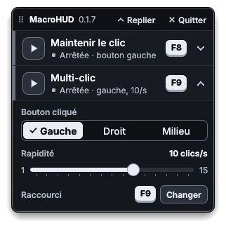
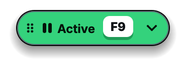

Ligne d'une macro externe dans le HUD
Aperçu validé par l'utilisateur le 2026-11-23 (P4.3, D-37), recopié ici avec des textes d'exemple : la macro « Exemple » et tout ce qu'elle affiche viennent de sa déclaration et de son script (docs/MACROS-EXTERNES.md). Les dispositions, tailles et formes font foi ; les couleurs sont celles du HUD (src/hud/style.rs). HUD redessiné d'après les vrais rendus de maquettes/rendu-egui/.
Aujourd'hui


Avec une macro externe
⠿MacroHUD 0.1.N⌃ Replier✕ Quitter
▶
Maintenir le clic
■ Arrêtée · bouton gauche
F8⌄▶
Multi-clic
■ Arrêtée · gauche, 10/s
F9⌄▶
Exemple
■ Arrêtée · limite 100 clics
F10⌃Limite de clics 100 clics
10500
Raccourci F10Changer
Garde la fenêtre visée au premier plan. Un vrai clic n'arrête pas cette macro : F10 ou ▶ l'arrêtent.
reglages), le raccourci, sa ligne d'aide (info). Arrêtée : « ■ Arrêtée · » suivi de etat_arretee.⠿MacroHUD 0.1.N⌃ Replier✕ Quitter
▶
Maintenir le clic
■ Arrêtée · bouton gauche
F8⌄▶
Multi-clic
■ Arrêtée · gauche, 10/s
F9⌄■
Exemple
● Active · 12/100
AttenteF10⌄etat, et la pastille d'étape (ici ambre) entre l'état et la touche.■
Exemple
● Active · 12/100
Clic !F10⌄■
Exemple
● Active · 13/100
Pause 8 sF10⌄■
Exemple
● Active · 13/100
RelanceF10⌄verte, grise, bleue (et ambre en 2).■
Exemple
❚❚ En pause · attend sa fenêtre
F10⌄attente <texte> : « ❚❚ En pause · texte », sans pastille ; reprise revient à 2.▶
Exemple
✓ Terminée · 100/100 clics
F10⌄fin <texte> : la macro s'est arrêtée seule ; liseré bleu, jusqu'au lancement suivant.⠿■ Active 12/100AttenteF10⌄
etat et la pastille.▶
Exemple
■ Arrêtée · limite 100 clics
F10⌄▲ La fenêtre visée est en plein écran. Passe-la en fenêtre : en plein écran, la macro ne voit pas l'écran.
alerte <titre> | <texte> : encadré ambre sous la ligne, comme « Raccourci refusé ».▶
Exemple
■ Arrêtée
F10⌄▲ « Exemple » ne peut pas démarrer. Son script est introuvable sur ce PC. Les autres macros marchent.
Ce qui fait foi
- La ligne d'une macro externe a la même forme que celle des macros internes ; rien ne la distingue.
- La pastille se place entre le texte d'état et la touche ; le texte d'état se coupe (…) avant elle si la place manque.
- Couleurs du HUD :
ambre= WARN,verte= vert actif sur fond sombre (comme le bouton ■),bleue= INFO,grise= texte secondaire sur fond sombre. - Le HUD garde sa largeur ; il grandit d'une ligne par macro externe.